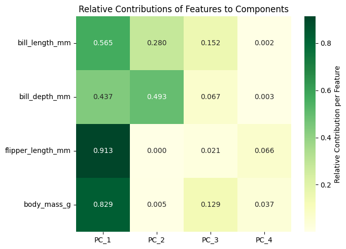
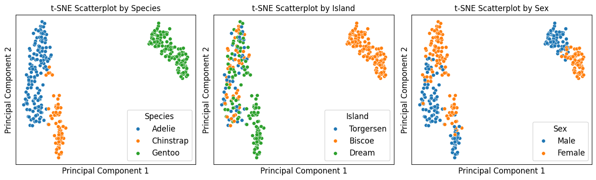
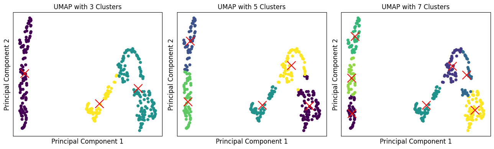
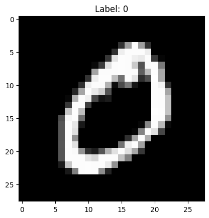
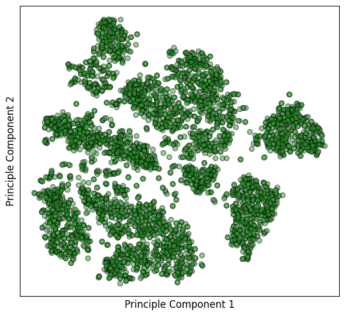
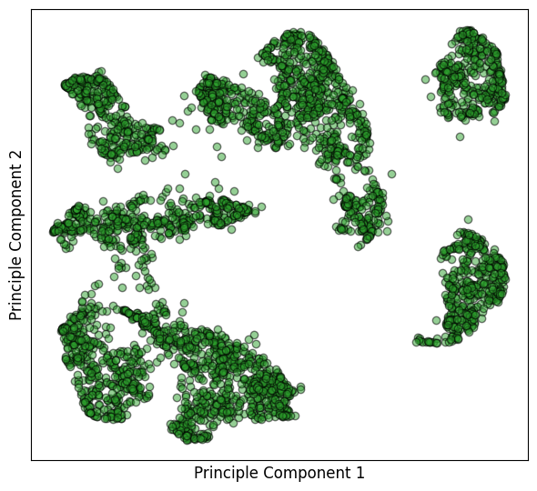
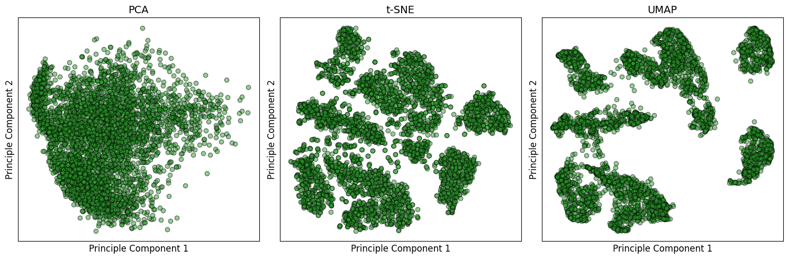

Unsupervised Learning (II): Dimensionality Reduction
Objectives
Understand motivation for dimensionality reduction, and representative methods (PCA, t-SNE, UMAP) to reduce dimensionalities in datasets.
Describe idea of PCA (linear method that keeps most variance), apply PCA to correlate features with components, interpret explained variance ratio, and decide how many components to keep.
Recognize t-SNE and UMAP as nonlinear methods for complex data visualization.
Apply PCA, t-SNE, and UMAP to Penguins and MNIST datasets to evaluate their performance in reducing dimensionality while retaining essential information for clustering.
Instructor note
40 min teaching
30 min exercises/discussion
1. From Clustering to Dimensionality Reduction: Simplifying Complexity
In episode Unsupervised Learning (I): Clustering, we talked about clustering, which is a core unsupervised ML technique that groups similar data points into clusters based on their features, without requiring labeled data.
fundamental value of clustering lies in its ability to reveal segments and patterns that are not immediately obvious, with applications ranging from customer segmentation in marketing to anomaly detection in network security
despite its usefulness, clustering comes with notable limitations
a major challenge is determining appropriate number of clusters in advance, as in K-Means, where results can vary depending on initialization
clustering results are highly sensitive to choice of distance metric and scaling of features, which can significantly alter outcomes
furthermore, clustering often struggles with high-dimensional data due to curse of dimensionality, where distance measures lose their discriminative power, making it harder to identify meaningful groups
given these challenges, especially around data sensitivity and interpretability, it is often crucial to preprocess data with another form of unsupervised learning before clustering: dimensionality reduction
where clustering seeks to group samples, dimensionality reduction focuses on simplifying feature space itself
by transforming a high-dimensional dataset into a lower-dimensional subspace while preserving its most critical relationships, dimensionality reduction can mitigate noise, reduce computational cost, and reveal most discriminative features that define data’s structure
this process not only addresses clustering’s sensitivity to irrelevant features but also provides a powerful foundation for visualizing potential clusters in 2D or 3D, making entire analytical process more robust and insightful
methods such as PCA (Principal Component Analysis), t-SNE (t-Distributed Stochastic Neighbor Embedding), and UMAP (Uniform Manifold Approximation and Projection) make data more manageable, reduce noise, and improve clustering performance
Penguins dataset includes multiple features (bill length, bill depth, flipper length, body mass, species labels, etc.), plotting it directly in 2D can make it difficult to capture all relationships and structures hidden in dataset
that is why we plot pairplots between all pair of features to achieve a clear visualization of their correlations
here we apply dimensionality reduction to this dataset
goal is to take dataset’s multiple features, and project them into a simpler, lower-dimensional space for a better visualization
this process not only helps us better understand data but also prepares it for downstream tasks, such as clustering or classification, by reducing noise and highlighting most informative aspects of dataset.
2. Load Dataset & Data Preparation
Following the procedures used in previous episodes, we apply the same preprocessing steps to the Penguins dataset, including handling missing values and detecting outliers. For the clustering task, categorical features are not required, so encoding them is unnecessary.
import numpy as np
import matplotlib.pyplot as plt
import pandas as pd
import seaborn as sns
penguins = sns.load_dataset('penguins')
penguins_dimR = penguins.dropna()
penguins_dimR.duplicated().value_counts()
species = penguins_dimR["species"]
from sklearn.preprocessing import StandardScaler
X = penguins_dimR[['bill_length_mm', 'bill_depth_mm', 'flipper_length_mm', 'body_mass_g']]
scaler = StandardScaler()
X_scaled = scaler.fit_transform(X)
3. Principal Component Analysis
3.1 What is PCA
PCA is an orthogonal linear transformation used to reduce dimensionality of data while preserving as much variability as possible
it is achieved by transforming original variables into a new set of uncorrelated variables called principal components (PCs)
each PC is a linear combination of original variables, and they are ordered such that 1st few retain most of variation present in original variables
PCA is very useful for two major purposes:
visualization
projecting a high-dimensional space into 2D/3D
using graphical visualizations, we can have insights about distribution of instances and look at how separable instances from different classes are
feature selection
since PCA can transform instances from high to lower dimensions, we could use this method to address curse of dimensionality
instead of learning from original set of features, we can transform our instances with PCA and then apply a learning algorithm on top of new feature space
3.2 Build a PCA model
When reducing Penguins dataset from 4D, a natural question arises: how many components are needed to retain sufficient information from original dataset?
we start with a simple task of preserving full variance by transforming Penguins dataset, which contains four numerical features, into a new dataset with four PCs
in this way, all information from original dataset is fully retained in new representation
we create a model
pca_4usingPCAclass fromsklearn.decomposition, specifying thatX_scaleddata should be converted into a new dataset with four PCs
from sklearn.decomposition import PCA
# build a new PCA model with 4 PCs
pca_penguin = PCA(n_components=4)
X_pca_penguin = pca_penguin.fit_transform(X_scaled)
explained_var_penguin = pca_penguin.explained_variance_ratio_
print(f'''The explained variance of PC1 is {explained_var_penguin[0]:.2%}
The explained variance of PC2 is {explained_var_penguin[1]:.2%}
The explained variance of PC3 is {explained_var_penguin[2]:.2%}
The explained variance of PC4 is {explained_var_penguin[3]:.2%}\n
The explained variance of ALL is {explained_var_penguin.sum():.2%}''')
The explained variance of PC1 is 68.63%
The explained variance of PC2 is 19.45%
The explained variance of PC3 is 9.22%
The explained variance of PC4 is 2.70%
The explained variance of ALL is 100.00%
Term explained variance ratio tells us how much of total variability in original Penguins dataset is captured by each PC.
1st PC has an explained variance ratio of 0.69, which means that 69% of variability in Penguins dataset can be represented by this single component.
1st two PCs can retain approximately 90% of information from original Penguins dataset.
What does the data in two principal components represent?
When we have two components,
PC1 is the direction in feature space along which the data varies the most,
PC2 is the direction orthogonal to PC1 that captures the next largest variance.
When we have three components, PC3 captures the next largest source of variance, orthogonal to both PC1 and PC2.
In such a situation, we have to use 3D visualization to visualize the three components.
When we have four componnents, PC4 captures the next largest source of variance, orthogonal to both PC1, PC2, and PC3.
It is difficult for us to visualize the four dimensional space.
from IPython.display import Image, display
display(Image("../images/dimensionality-reduction/pca-data-representation.png", width=1024))
{kind=link}
# create DataFrame for PCA results
pca_penguin_columns = [f'PC_{i+1}' for i in range(X_pca_penguin.shape[1])]
X_pca_penguin_add_PCs = pd.DataFrame(X_pca_penguin, columns=pca_penguin_columns, index=X.index)
# concatenate with original DataFrame
X_penguin_add_PC4 = pd.concat([X, X_pca_penguin_add_PCs], axis=1)
X_penguin_add_PC4
| bill_length_mm | bill_depth_mm | flipper_length_mm | body_mass_g | PC_1 | PC_2 | PC_3 | PC_4 | |
|---|---|---|---|---|---|---|---|---|
| 0 | 39.1 | 18.7 | 181.0 | 3750.0 | -1.853593 | 0.032069 | -0.234902 | -0.528397 |
| 1 | 39.5 | 17.4 | 186.0 | 3800.0 | -1.316254 | -0.443527 | -0.027470 | -0.401727 |
| 2 | 40.3 | 18.0 | 195.0 | 3250.0 | -1.376605 | -0.161230 | 0.189689 | 0.528662 |
| 4 | 36.7 | 19.3 | 193.0 | 3450.0 | -1.885288 | -0.012351 | -0.628873 | 0.472893 |
| 5 | 39.3 | 20.6 | 190.0 | 3650.0 | -1.919981 | 0.817598 | -0.701051 | 0.196416 |
| ... | ... | ... | ... | ... | ... | ... | ... | ... |
| 338 | 47.2 | 13.7 | 214.0 | 4925.0 | 1.997716 | -0.976771 | 0.379425 | -0.160892 |
| 340 | 46.8 | 14.3 | 215.0 | 4850.0 | 1.832651 | -0.784510 | 0.240758 | 0.008955 |
| 341 | 50.4 | 15.7 | 222.0 | 5750.0 | 2.751505 | 0.266556 | -0.419306 | -0.236256 |
| 342 | 45.2 | 14.8 | 212.0 | 5200.0 | 1.713854 | -0.725875 | -0.262764 | -0.330004 |
| 343 | 49.9 | 16.1 | 213.0 | 5400.0 | 2.018537 | 0.336554 | -0.155331 | -0.438802 |
333 rows × 8 columns
Correlations between original variables (features) andb new PCs are described by corr_var_comp, which qualifies how strongly each original variable contributes to a PC
corr_var_compranges from -1 to 1+1 means a perfect positive correlation betweenbvariable and component.
0 indicates no linear correlation, and component does not explain that variable at all.
-1 suggests a perfect negative correlation
cp_variables = X_penguin_add_PC4.columns
n_variables = pca_penguin.n_features_in_
# calculate the covariance matrix between veriables and Components
cov_var_comp = X_penguin_add_PC4.cov()
cov_var_comp = cov_var_comp.iloc[:pca_penguin.n_features_in_, pca_penguin.n_features_in_:]
# calculate the correlation matrix between variables and Components
corr_var_comp = X_penguin_add_PC4.corr()
corr_var_comp = corr_var_comp.iloc[:pca_penguin.n_features_in_, pca_penguin.n_features_in_:]
corr_var_comp
| PC_1 | PC_2 | PC_3 | PC_4 | |
|---|---|---|---|---|
| bill_length_mm | 0.751829 | 0.529438 | 0.390097 | -0.047682 |
| bill_depth_mm | -0.661186 | 0.702309 | -0.258529 | 0.052522 |
| flipper_length_mm | 0.955748 | 0.005106 | -0.143347 | 0.256849 |
| body_mass_g | 0.910762 | 0.067449 | -0.359279 | -0.192045 |
In practical applications, square of correlation between a variable and a component is often denoted cos² (cosine squared)
cosine of angle between variable vector and component axis tells you how much of variable’s variance is explained by that component
squaring it gives proportion of variance of that variable explained by component, hence cos²
we square
corr_var_compto get proportion of each variable’s variance explained by each PCfigure below allows us to examine and visualize in detail how each original penguine feature contributes to four PCs
each PC is a linear combination of original features and can be expressed mathematically as
$PC1_i = w_1 * bill_length_i + w_2 * bill_depth_i + w_3 * flipper_length_i + w_4 * body_mass_i$
cos2 = corr_var_comp**2
# normalize the cos2 matrix by row (each row sums to 1)
cos2_normalized = cos2.div(cos2.sum(axis=1), axis=0)
# plot the normalized heatmap
plt.figure(figsize=(7, 5))
heatmap = sns.heatmap(cos2_normalized,
annot=True,
fmt=".3f",
cmap='YlGn',
cbar_kws={'label': 'Relative Contribution per Feature'})
plt.title('Relative Contributions of Features to Components')
plt.tight_layout()
plt.show()

How many PCs are truly necessary to represent dataset effectively?
there is no single fixed number of PCs that is always “necessary”
instead, number of PCs we should keep depends on how much variance we want to preserve and how much structure in data is meaningful for our task
some tips to reserve PCs
look at the explained variance ratio
cumulative variance >= 90% is often used in scientific data, imaging, chemistry, biology:
cumulative variance >= 95% is good when noise is high
cumulative variance >= 99% is used for lossless compression-like scenarios
use “elbow method”
plot eigenvalues (variance explained by each PC) and cumulative variance curve
if see a sharp drop then a plateau, then hoose number of PCs at “elbow”, where adding more components yields minimal additional variance
consider downstream task performance
noise structure matters
if dataset contains many noisy or redundant variables, PCA will compress strongly, meaning that only a few PCs may be meaningful, and remaining PCs mostly capture noise
practical rule of thumb - 1
when you don’t know dataset yet
keep enough PCs to capture 90–95% variance
expect somewhere between 5–50 PCs for most real datasets
practical rule of thumb - 2
fewer components → lower-dimensional representation → some information is lost, but main patterns remain
more components → higher-dimensional representation → more information retained
X_penguin_add_PC4_categorical = pd.concat([penguins_dimR[["species", 'island', 'sex']], X_penguin_add_PC4], axis=1)
X_penguin_add_PC4_categorical
| species | island | sex | bill_length_mm | bill_depth_mm | flipper_length_mm | body_mass_g | PC_1 | PC_2 | PC_3 | PC_4 | |
|---|---|---|---|---|---|---|---|---|---|---|---|
| 0 | Adelie | Torgersen | Male | 39.1 | 18.7 | 181.0 | 3750.0 | -1.853593 | 0.032069 | -0.234902 | -0.528397 |
| 1 | Adelie | Torgersen | Female | 39.5 | 17.4 | 186.0 | 3800.0 | -1.316254 | -0.443527 | -0.027470 | -0.401727 |
| 2 | Adelie | Torgersen | Female | 40.3 | 18.0 | 195.0 | 3250.0 | -1.376605 | -0.161230 | 0.189689 | 0.528662 |
| 4 | Adelie | Torgersen | Female | 36.7 | 19.3 | 193.0 | 3450.0 | -1.885288 | -0.012351 | -0.628873 | 0.472893 |
| 5 | Adelie | Torgersen | Male | 39.3 | 20.6 | 190.0 | 3650.0 | -1.919981 | 0.817598 | -0.701051 | 0.196416 |
| ... | ... | ... | ... | ... | ... | ... | ... | ... | ... | ... | ... |
| 338 | Gentoo | Biscoe | Female | 47.2 | 13.7 | 214.0 | 4925.0 | 1.997716 | -0.976771 | 0.379425 | -0.160892 |
| 340 | Gentoo | Biscoe | Female | 46.8 | 14.3 | 215.0 | 4850.0 | 1.832651 | -0.784510 | 0.240758 | 0.008955 |
| 341 | Gentoo | Biscoe | Male | 50.4 | 15.7 | 222.0 | 5750.0 | 2.751505 | 0.266556 | -0.419306 | -0.236256 |
| 342 | Gentoo | Biscoe | Female | 45.2 | 14.8 | 212.0 | 5200.0 | 1.713854 | -0.725875 | -0.262764 | -0.330004 |
| 343 | Gentoo | Biscoe | Male | 49.9 | 16.1 | 213.0 | 5400.0 | 2.018537 | 0.336554 | -0.155331 | -0.438802 |
333 rows × 11 columns
After transforming Penguins dataset from four features to four PCs, we project data onto any pair of PCs for visualization
fig, axes = plt.subplots(1, 3, figsize=(13,4))
# left subpolt: hua by species
sns.scatterplot(data=X_penguin_add_PC4_categorical, x='PC_1', y='PC_2', hue='species', s=32, ax=axes[0])
axes[0].set_title("PCA Scatterplot by Species", fontsize=12)
axes[0].set_xlabel("Principal Component 1", fontsize=12)
axes[0].set_ylabel("Principal Component 2", fontsize=12)
axes[0].legend(title="Species", fontsize=12, title_fontsize=12)
axes[0].set_xticks([])
axes[0].set_yticks([])
# middle subplot: hue by island
sns.scatterplot(data=X_penguin_add_PC4_categorical, x='PC_2', y='PC_3', hue='island', s=32, ax=axes[1])
axes[1].set_title("PCA Scatterplot by Island", fontsize=12)
axes[1].set_xlabel("Principal Component 2", fontsize=12)
axes[1].set_ylabel("Principal Component 3", fontsize=12)
axes[1].legend(title="Island", fontsize=12, title_fontsize=12)
axes[1].set_xticks([])
axes[1].set_yticks([])
# right subplot: hue by sex
sns.scatterplot(data=X_penguin_add_PC4_categorical, x='PC_3', y='PC_4', hue='sex', s=32, ax=axes[2])
axes[2].set_title("PCA Scatterplot by Sex", fontsize=12)
axes[2].set_xlabel("Principal Component 3", fontsize=12)
axes[2].set_ylabel("Principal Component 4", fontsize=12)
axes[2].legend(title="Sex", fontsize=12, title_fontsize=12)
axes[2].set_xticks([])
axes[2].set_yticks([])
plt.tight_layout()
plt.show()

3.3 Correlation circle
To gain deeper insight into how original variables relate to principal components, we can use a correlation circle, also known as a variable factor map
this graphical tool provides a visual representation of contribution and correlation of each original variable with components
in a 2D PCA plot (PC1 vs. PC2 in left subplot, and PC3 vs. PC4 in right subplot), each original feature is represented as a vector (arrow) pointing from origin
direction of arrow indicates whether variable (feature) is positively or negatively correlated with principal components
length of arrow indicates strength of correlation — longer arrows mean variable (feature) contributes strongly to components
circle itself (radius = 1) represents maximum possible correlation between a variable (feature) and components, since PCA projects standardized variables (features)
in addition, correlations between variables (features) can also be specified
variables (features) pointing in similar directions are positively correlated (body mass and flipper length), that is why we performed regression task using these two features
variables (features) pointing in opposite directions are negatively correlated (for specific pairs of components)
variables (features) at roughly 90° to each other are nearly uncorrelated
# create loadings DataFrame (correlations between variables and components)
loadings = pca_penguin.components_.T * np.sqrt(pca_penguin.explained_variance_)
loadings_df = pd.DataFrame(loadings,
columns=[f'PC{i+1}' for i in range(4)], # n_components
index=X.columns)
# create a figure with two subplots side by side
fig, (ax1, ax2) = plt.subplots(1, 2, figsize=(12, 6))
fig.suptitle('Correlation Circle Plots for Principal Components for Penguins Dataset', fontsize=14)
# cunction to create a correlation circle on a given axis
def plot_correlation_circle(loadings, pc_x, pc_y, ax, title):
# set the aspect ratio to equal for a perfect circle
ax.set_aspect('equal', adjustable='box')
# create a unit circle
circle = plt.Circle((0, 0), 1, color='lightblue', fill=False, linestyle='--', alpha=0.8)
ax.add_patch(circle)
# plot arrows and labels for each variable
for i, feature in enumerate(loadings.index):
x = loadings.loc[feature, pc_x]
y = loadings.loc[feature, pc_y]
# plot arrow
ax.arrow(0, 0, x, y, head_width=0.05, head_length=0.05, fc='k', ec='k', alpha=0.6)
# plot label (offset slightly from the arrow tip)
ax.text(x * 1.15, y * 1.15, feature, ha='center', va='center',
fontweight='bold', fontsize=10,
bbox=dict(facecolor='white', alpha=0.7, boxstyle='round,pad=0.3'))
ax.axhline(y=0, color='k', linestyle='-', alpha=0.3)
ax.axvline(x=0, color='k', linestyle='-', alpha=0.3)
ax.set_xlim(-1.1, 1.1)
ax.set_ylim(-1.1, 1.1)
# calculate variance explained for the specific components
pc_x_idx = int(pc_x[2:]) - 1 # Extract number from 'PC1' -> 0
pc_y_idx = int(pc_y[2:]) - 1 # Extract number from 'PC2' -> 1
ax.set_xlabel(f'{pc_x} ({pca_penguin.explained_variance_ratio_[pc_x_idx]:.1%} variance)',
fontsize=12)
ax.set_ylabel(f'{pc_y} ({pca_penguin.explained_variance_ratio_[pc_y_idx]:.1%} variance)',
fontsize=12)
ax.set_title(title, fontsize=14)
ax.grid(True, linestyle='--', alpha=0.7)
# PC1 vs PC2
plot_correlation_circle(loadings_df, 'PC1', 'PC2', ax1, 'Principal Components 1-2 ("Size" vs "Bill Shape")')
# PC3 vs PC4
plot_correlation_circle(loadings_df, 'PC3', 'PC4', ax2, 'Principal Components 3-4 (Residual Patterns)')
plt.tight_layout()
plt.subplots_adjust(top=0.9)
plt.show()

4. t-Distributed Stochastic Neighbor Embedding (t-SNE)
Since PCA is based on linear combinations of all features, it has some inherent limitations
in particular, it may fail to capture complex, non-linear relationships in data, and it primarily focuses on maximizing global variance, which can overlook subtle local structures, intricate clusters, or hierarchical patterns – that are quite common in real-world datasets
to address these challenges, we move beyond linear methods and explore advanced non-linear dimensionality reduction techniques. Algorithms such as t-SNE (t-Distributed Stochastic Neighbor Embedding) and UMAP (Uniform Manifold Approximation and Projection) are particularly effective in capturing non-linear patterns in dataset.
These methods are designed to preserve local neighborhood relationships, revealing intricate patterns that PCA might miss and providing a more detailed view of the underlying structure of the penguin population.
4.1 What is t-SNE
t-SNE is a powerful dimensionality reduction technique primarily used for visualizing high-dimensional data in 2D or 3D
main idea of t-SNE is to preserve local structure of data, meaning that points that are close in high-dimensional space remain close in lower-dimensional embedding
that is, it models pairwise similarities between data points in both high-dimensional and low-dimensional spaces
4.2 Build a t-SNE model
We build a t-SNE model with 2 PCs using TSNE class in sklearn.manifold
hyperparameter
perplexitycontrols number of effective neighbors each point considers when learning embeddinghigher values emphasize global structure, lower values emphasize local relationships
from sklearn.manifold import TSNE
# build a t-SNE model with 2 PCs
tsne_penguin = TSNE(n_components = 2, perplexity = 50)
X_tsne_penguin = tsne_penguin.fit_transform(X_scaled)
X_tsne_penguin_species = penguins_dimR.join(pd.DataFrame(X_tsne_penguin,
index = penguins_dimR.index,
columns = ['PC_1', 'PC_2']))
X_tsne_penguin_species
| species | island | bill_length_mm | bill_depth_mm | flipper_length_mm | body_mass_g | sex | PC_1 | PC_2 | |
|---|---|---|---|---|---|---|---|---|---|
| 0 | Adelie | Torgersen | 39.1 | 18.7 | 181.0 | 3750.0 | Male | -12.583183 | 1.296008 |
| 1 | Adelie | Torgersen | 39.5 | 17.4 | 186.0 | 3800.0 | Female | -10.202713 | 1.233770 |
| 2 | Adelie | Torgersen | 40.3 | 18.0 | 195.0 | 3250.0 | Female | -8.527937 | 1.971435 |
| 4 | Adelie | Torgersen | 36.7 | 19.3 | 193.0 | 3450.0 | Female | -12.553984 | -0.584580 |
| 5 | Adelie | Torgersen | 39.3 | 20.6 | 190.0 | 3650.0 | Male | -13.948335 | -2.829005 |
| ... | ... | ... | ... | ... | ... | ... | ... | ... | ... |
| 338 | Gentoo | Biscoe | 47.2 | 13.7 | 214.0 | 4925.0 | Female | 27.998510 | 2.550709 |
| 340 | Gentoo | Biscoe | 46.8 | 14.3 | 215.0 | 4850.0 | Female | 27.374943 | 2.283183 |
| 341 | Gentoo | Biscoe | 50.4 | 15.7 | 222.0 | 5750.0 | Male | 22.121027 | 4.712508 |
| 342 | Gentoo | Biscoe | 45.2 | 14.8 | 212.0 | 5200.0 | Female | 26.795017 | 3.393671 |
| 343 | Gentoo | Biscoe | 49.9 | 16.1 | 213.0 | 5400.0 | Male | 23.649200 | 5.150282 |
333 rows × 9 columns
After fitting the t-SNE model, we can visualize the Penguin dataset in two dimensions, allowing us to explore the relationships between individual data points, identify potential clusters, and observe how different species are distributed across the embedding.
# visualize dataset in 2D
fig, axes = plt.subplots(1, 3, figsize=(13,4))
# left subpolt: hua by species
sns.scatterplot(data=X_tsne_penguin_species, x='PC_1', y='PC_2', hue='species', s=32, ax=axes[0])
axes[0].set_title("t-SNE Scatterplot by Species", fontsize=12)
axes[0].set_xlabel("Principal Component 1", fontsize=12)
axes[0].set_ylabel("Principal Component 2", fontsize=12)
axes[0].legend(title="Species", fontsize=12, title_fontsize=12)
axes[0].set_xticks([])
axes[0].set_yticks([])
# middle subplot: hue by island
sns.scatterplot(data=X_tsne_penguin_species, x='PC_1', y='PC_2', hue='island', s=32, ax=axes[1])
axes[1].set_title("t-SNE Scatterplot by Island", fontsize=12)
axes[1].set_xlabel("Principal Component 1", fontsize=12)
axes[1].set_ylabel("Principal Component 2", fontsize=12)
axes[1].legend(title="Island", fontsize=12, title_fontsize=12)
axes[1].set_xticks([])
axes[1].set_yticks([])
# right subplot: hue by sex
sns.scatterplot(data=X_tsne_penguin_species, x='PC_1', y='PC_2', hue='sex', s=32, ax=axes[2])
axes[2].set_title("t-SNE Scatterplot by Sex", fontsize=12)
axes[2].set_xlabel("Principal Component 1", fontsize=12)
axes[2].set_ylabel("Principal Component 2", fontsize=12)
axes[2].legend(title="Sex", fontsize=12, title_fontsize=12)
axes[2].set_xticks([])
axes[2].set_yticks([])
plt.tight_layout()
plt.show()

# use KMeans to clusterize dataset
from sklearn.cluster import KMeans
kmeans_temp_3 = KMeans(n_clusters=3)
kmeans_temp_3.fit(X_tsne_penguin)
clusters_kmeans_temp_3 = kmeans_temp_3.predict(X_tsne_penguin)
kmeans_temp_5 = KMeans(n_clusters=5)
kmeans_temp_5.fit(X_tsne_penguin)
clusters_kmeans_temp_5 = kmeans_temp_5.predict(X_tsne_penguin)
kmeans_temp_7 = KMeans(n_clusters=7)
kmeans_temp_7.fit(X_tsne_penguin)
clusters_kmeans_temp_7 = kmeans_temp_7.predict(X_tsne_penguin)
fig, axes = plt.subplots(1, 3, figsize=(13,4))
# left: clustering into 3 groups
axes[0].scatter(X_tsne_penguin[:,0], X_tsne_penguin[:,1], s=32, linewidth=0, c=clusters_kmeans_temp_3)
for x, y in kmeans_temp_3.cluster_centers_:
axes[0].scatter(x, y, s=256, c='r', marker='x')
axes[0].set_title("t-SNE with 3 Clusters", fontsize=12)
axes[0].set_xlabel("Principal Component 1", fontsize=12)
axes[0].set_ylabel("Principal Component 2", fontsize=12)
axes[0].set_xticks([])
axes[0].set_yticks([])
# middle: clustering into 5 groups
axes[1].scatter(X_tsne_penguin[:,0], X_tsne_penguin[:,1], s=32, linewidth=0, c=clusters_kmeans_temp_5)
for x, y in kmeans_temp_5.cluster_centers_:
axes[1].scatter(x, y, s=256, c='r', marker='x')
axes[1].set_title("t-SNE with 5 Clusters", fontsize=12)
axes[1].set_xlabel("Principal Component 1", fontsize=12)
axes[1].set_ylabel("Principal Component 2", fontsize=12)
axes[1].set_xticks([])
axes[1].set_yticks([])
# right: clustering into 7 groups
axes[2].scatter(X_tsne_penguin[:,0], X_tsne_penguin[:,1], s=32, linewidth=0, c=clusters_kmeans_temp_7)
for x, y in kmeans_temp_7.cluster_centers_:
axes[2].scatter(x, y, s=256, c='r', marker='x')
axes[2].set_title("t-SNE with 7 Clusters", fontsize=12)
axes[2].set_xlabel("Principal Component 1", fontsize=12)
axes[2].set_ylabel("Principal Component 2", fontsize=12)
axes[2].set_xticks([])
axes[2].set_yticks([])
plt.tight_layout()
plt.show()

Warning
It is noted that t-SNE is primarily a visualization tool rather than a feature extraction method, and resulting embedding should not be used directly for downstream tasks (such as classification)
each time we run t-SNE, coordinates can change slightly due to randomness, even with same data
as such, features produced by t-SNE may not be stable or meaningful for predictive modeling.
5. UMAP
5.1 What is UMAP
UMAP (Uniform Manifold Approximation and Projection) is a non-linear dimensionality reduction technique
it is based on manifold learning and graph theory
manifold learning means it assumes that even though data might have many dimensions, real structure of data lies on a lower-dimensional surface (like a curve or sheet) inside that high-dimensional space, and UMAP tries to find and keep that structure
graph theory means UMAP represents data as a graph
each point is a node, and connections (edges) show how close points are to each other
then it uses math to squeeze this graph down into 2D or 3D while keeping structure as much as possible
it is similar in purpose to t-SNE, but with some key differences
it preserves both local and some global structure of data
generally faster and more scalable than t-SNE, especially for large datasets
can be used for visualization (2D/3D) or as a preprocessing step for downstream tasks like clustering or classification
it constructs a high-dimensional graph representation of data and then projects it onto a low-dimensional space, by applying a series of optimization steps
this results in a visual representation of data that is both accurate and interpretable
in comparison to PCA and t-SNE, UMAP offers a good balance of accuracy, efficiency, and scalability, making it a popular choice for dimensionality reduction in ML and DL tasks
5.2 Build a UMAP model
Following same procedure as in t-SNE subsection, we build and fit UMAP model, and visualize Penguins dataset in 2D, colored by species, island, and sex
import umap
umap_penguin = umap.UMAP(n_components = 2, n_neighbors=10)
X_umap_penguin = umap_penguin.fit_transform(X_scaled)
X_umap_penguin_species = penguins_dimR.join(pd.DataFrame(X_umap_penguin,
index = penguins_dimR.index,
columns = ['PC_1', 'PC_2']))
X_umap_penguin_species
| species | island | bill_length_mm | bill_depth_mm | flipper_length_mm | body_mass_g | sex | PC_1 | PC_2 | |
|---|---|---|---|---|---|---|---|---|---|
| 0 | Adelie | Torgersen | 39.1 | 18.7 | 181.0 | 3750.0 | Male | 12.092779 | 6.094970 |
| 1 | Adelie | Torgersen | 39.5 | 17.4 | 186.0 | 3800.0 | Female | 12.579257 | 5.008840 |
| 2 | Adelie | Torgersen | 40.3 | 18.0 | 195.0 | 3250.0 | Female | 12.815824 | 4.844804 |
| 4 | Adelie | Torgersen | 36.7 | 19.3 | 193.0 | 3450.0 | Female | 12.595866 | 7.483640 |
| 5 | Adelie | Torgersen | 39.3 | 20.6 | 190.0 | 3650.0 | Male | 11.443077 | 8.832818 |
| ... | ... | ... | ... | ... | ... | ... | ... | ... | ... |
| 338 | Gentoo | Biscoe | 47.2 | 13.7 | 214.0 | 4925.0 | Female | -4.147605 | 9.055198 |
| 340 | Gentoo | Biscoe | 46.8 | 14.3 | 215.0 | 4850.0 | Female | -4.107390 | 8.724307 |
| 341 | Gentoo | Biscoe | 50.4 | 15.7 | 222.0 | 5750.0 | Male | -4.172944 | 5.019638 |
| 342 | Gentoo | Biscoe | 45.2 | 14.8 | 212.0 | 5200.0 | Female | -3.845546 | 7.865406 |
| 343 | Gentoo | Biscoe | 49.9 | 16.1 | 213.0 | 5400.0 | Male | -3.820135 | 5.863566 |
333 rows × 9 columns
fig, axes = plt.subplots(1, 3, figsize=(13, 4))
# left subpolt: hua by species
sns.scatterplot(data=X_umap_penguin_species, x='PC_1', y='PC_2', hue='species', s=32, ax=axes[0])
axes[0].set_title("UMAP Scatterplot by Species", fontsize=12)
axes[0].set_xlabel("Principal Component 1", fontsize=12)
axes[0].set_ylabel("Principal Component 2", fontsize=12)
axes[0].legend(title="Species", fontsize=12, title_fontsize=12)
axes[0].set_xticks([])
axes[0].set_yticks([])
# middle subplot: hue by island
sns.scatterplot(data=X_umap_penguin_species, x='PC_1', y='PC_2', hue='island', s=32, ax=axes[1])
axes[1].set_title("UMAP Scatterplot by Island", fontsize=12)
axes[1].set_xlabel("Principal Component 1", fontsize=12)
axes[1].set_ylabel("Principal Component 2", fontsize=12)
axes[1].legend(title="Island", fontsize=12, title_fontsize=12)
axes[1].set_xticks([])
axes[1].set_yticks([])
# right subplot: hue by sex
sns.scatterplot(data=X_umap_penguin_species, x='PC_1', y='PC_2', hue='sex', s=32, ax=axes[2])
axes[2].set_title("UMAP Scatterplot by Sex", fontsize=12)
axes[2].set_xlabel("Principal Component 1", fontsize=12)
axes[2].set_ylabel("Principal Component 2", fontsize=12)
axes[2].legend(title="Sex", fontsize=12, title_fontsize=12)
axes[2].set_xticks([])
axes[2].set_yticks([])
plt.tight_layout()
plt.show()

Here we perform downstream clustering task using K-Means on a dataset reduced to two components obtained from UMAP model
kmeans_temp_3 = KMeans(n_clusters=3)
kmeans_temp_3.fit(X_umap_penguin)
kmeans_temp_3_clusters = kmeans_temp_3.predict(X_umap_penguin)
kmeans_temp_5 = KMeans(n_clusters=5)
kmeans_temp_5.fit(X_umap_penguin)
kmeans_temp_5_clusters = kmeans_temp_5.predict(X_umap_penguin)
kmeans_temp_7 = KMeans(n_clusters=7)
kmeans_temp_7.fit(X_umap_penguin)
kmeans_temp_7_clusters = kmeans_temp_7.predict(X_umap_penguin)
fig, axes = plt.subplots(1, 3, figsize=(13,4))
# left: clustering into 3 groups
axes[0].scatter(X_umap_penguin[:,0], X_umap_penguin[:,1], s=32, linewidth=0, c=kmeans_temp_3_clusters)
for x, y in kmeans_temp_3.cluster_centers_:
axes[0].scatter(x, y, s=256, c='r', marker='x')
axes[0].set_title("UMAP with 3 Clusters", fontsize=12)
axes[0].set_xlabel("Principal Component 1", fontsize=12)
axes[0].set_ylabel("Principal Component 2", fontsize=12)
axes[0].set_xticks([])
axes[0].set_yticks([])
# middle: clustering into 5 groups
axes[1].scatter(X_umap_penguin[:,0], X_umap_penguin[:,1], s=32, linewidth=0, c=kmeans_temp_5_clusters)
for x, y in kmeans_temp_5.cluster_centers_:
axes[1].scatter(x, y, s=256, c='r', marker='x')
axes[1].set_title("UMAP with 5 Clusters", fontsize=12)
axes[1].set_xlabel("Principal Component 1", fontsize=12)
axes[1].set_ylabel("Principal Component 2", fontsize=12)
axes[1].set_xticks([])
axes[1].set_yticks([])
# right: clustering into 7 groups
axes[2].scatter(X_umap_penguin[:,0], X_umap_penguin[:,1], s=32, linewidth=0, c=kmeans_temp_7_clusters)
for x, y in kmeans_temp_7.cluster_centers_:
axes[2].scatter(x, y, s=256, c='r', marker='x')
axes[2].set_title("UMAP with 7 Clusters", fontsize=12)
axes[2].set_xlabel("Principal Component 1", fontsize=12)
axes[2].set_ylabel("Principal Component 2", fontsize=12)
axes[2].set_xticks([])
axes[2].set_yticks([])
plt.tight_layout()
plt.show()

6. Dimensionality Reduction on MNIST Dataset
6.1 MNIST dataset
MNIST (Modified National Institute of Standards and Technology) dataset is one of most widely used datasets in ML and CV
it was created in 1998 by Yann LeCun, and contains contains a total of 70000 grayscale images of handwritten digits ranging from 0 to 9, and each image is a 28 × 28 pixel square, giving 784 features when flattened into a vector
from sklearn.datasets import fetch_openml
# download MNIST from OpenML
mnist = fetch_openml('mnist_784', version=1, as_frame=False)
# features and labels
features, labels = mnist.data, mnist.target
print(f"Number of samples (images): {features.shape[0]} \nNumber of features per sample (image): {features.shape[1]}\n")
# number of samples (images) for dimensionality reduction application
num_sample = 4000
X, y = features[:num_sample], labels[:num_sample]
Number of samples (images): 70000
Number of features per sample (image): 784
# data for 2nd image
print(X[1])
[ 0 0 0 0 0 0 0 0 0 0 0 0 0 0 0 0 0 0
0 0 0 0 0 0 0 0 0 0 0 0 0 0 0 0 0 0
0 0 0 0 0 0 0 0 0 0 0 0 0 0 0 0 0 0
0 0 0 0 0 0 0 0 0 0 0 0 0 0 0 0 0 0
0 0 0 0 0 0 0 0 0 0 0 0 0 0 0 0 0 0
0 0 0 0 0 0 0 0 0 0 0 0 0 0 0 0 0 0
0 0 0 0 0 0 0 0 0 0 0 0 0 0 0 0 0 0
0 51 159 253 159 50 0 0 0 0 0 0 0 0 0 0 0 0
0 0 0 0 0 0 0 0 0 0 48 238 252 252 252 237 0 0
0 0 0 0 0 0 0 0 0 0 0 0 0 0 0 0 0 0
0 54 227 253 252 239 233 252 57 6 0 0 0 0 0 0 0 0
0 0 0 0 0 0 0 0 0 10 60 224 252 253 252 202 84 252
253 122 0 0 0 0 0 0 0 0 0 0 0 0 0 0 0 0
0 163 252 252 252 253 252 252 96 189 253 167 0 0 0 0 0 0
0 0 0 0 0 0 0 0 0 0 51 238 253 253 190 114 253 228
47 79 255 168 0 0 0 0 0 0 0 0 0 0 0 0 0 0
0 48 238 252 252 179 12 75 121 21 0 0 253 243 50 0 0 0
0 0 0 0 0 0 0 0 0 0 38 165 253 233 208 84 0 0
0 0 0 0 253 252 165 0 0 0 0 0 0 0 0 0 0 0
0 7 178 252 240 71 19 28 0 0 0 0 0 0 253 252 195 0
0 0 0 0 0 0 0 0 0 0 0 57 252 252 63 0 0 0
0 0 0 0 0 0 253 252 195 0 0 0 0 0 0 0 0 0
0 0 0 198 253 190 0 0 0 0 0 0 0 0 0 0 255 253
196 0 0 0 0 0 0 0 0 0 0 0 76 246 252 112 0 0
0 0 0 0 0 0 0 0 253 252 148 0 0 0 0 0 0 0
0 0 0 0 85 252 230 25 0 0 0 0 0 0 0 0 7 135
253 186 12 0 0 0 0 0 0 0 0 0 0 0 85 252 223 0
0 0 0 0 0 0 0 7 131 252 225 71 0 0 0 0 0 0
0 0 0 0 0 0 85 252 145 0 0 0 0 0 0 0 48 165
252 173 0 0 0 0 0 0 0 0 0 0 0 0 0 0 86 253
225 0 0 0 0 0 0 114 238 253 162 0 0 0 0 0 0 0
0 0 0 0 0 0 0 0 85 252 249 146 48 29 85 178 225 253
223 167 56 0 0 0 0 0 0 0 0 0 0 0 0 0 0 0
85 252 252 252 229 215 252 252 252 196 130 0 0 0 0 0 0 0
0 0 0 0 0 0 0 0 0 0 28 199 252 252 253 252 252 233
145 0 0 0 0 0 0 0 0 0 0 0 0 0 0 0 0 0
0 0 0 25 128 252 253 252 141 37 0 0 0 0 0 0 0 0
0 0 0 0 0 0 0 0 0 0 0 0 0 0 0 0 0 0
0 0 0 0 0 0 0 0 0 0 0 0 0 0 0 0 0 0
0 0 0 0 0 0 0 0 0 0 0 0 0 0 0 0 0 0
0 0 0 0 0 0 0 0 0 0 0 0 0 0 0 0 0 0
0 0 0 0 0 0 0 0 0 0 0 0 0 0 0 0 0 0
0 0 0 0 0 0 0 0 0 0 0 0 0 0 0 0 0 0
0 0 0 0 0 0 0 0 0 0]
# show 2nd image
plt.imshow(X[1].reshape(28, 28), cmap="gray")
plt.title(f"Label: {y[1]}")
plt.show()

6.2 PCA
We first apply PCA on 784 features of 4000 grayscale images of handwritten digits and retai two most-major components
it returns an array of 4000 x 2 where 2 columns are 1st and 2nd PCs of each grayscale images
we plot these two PCs against each other
# PCA with 2 components
pca_mnist = PCA(n_components=2)
X_pca_mnist = pca_mnist.fit_transform(X)
print(X_pca_mnist.shape)
(4000, 2)
fig = plt.figure(figsize=(6, 5.5))
plt.scatter(X_pca_mnist[:, 0], X_pca_mnist[:, 1], c='tab:green', edgecolor='k', alpha=0.5)
plt.xlabel("Principle Component 1", fontsize = 12)
plt.ylabel("Principle Component 2", fontsize = 12)
plt.xticks([])
plt.yticks([])
plt.tight_layout()
plt.show()

Then we apply KMeans clustering algorithm to this 2D representation of MNIST dataset and compare resulting clusters with true image labels
PCA has made a strong attempt to reduce dimensionality of MNIST dataset from 784D to 2D while preserving key structural information
we can observe that digit 0 forms a reasonable pattern, but there is significant overlap among other digits
# apply clustering on PCA data
from sklearn.cluster import KMeans
kmean_pca_mnist = KMeans(n_clusters=10)
kmean_pca_mnist.fit(X_pca_mnist)
clusters_kmeans_pca_mnist = kmean_pca_mnist.predict(X_pca_mnist)
fig, axes = plt.subplots(1, 2, figsize=(12, 5.5),
gridspec_kw={'width_ratios': [1, 1.2]}
)
# left: clustering results with cluster centers
axes[0].scatter(X_pca_mnist[:, 0], X_pca_mnist[:, 1], s=32, linewidth=0, c=clusters_kmeans_pca_mnist)
for cluster_x, cluster_y in kmean_pca_mnist.cluster_centers_:
axes[0].scatter(cluster_x, cluster_y, s=256, c='r', marker='x')
axes[0].set_title("KMeans Clusters")
axes[0].set_xlabel("Principle Component 1", fontsize=12)
axes[0].set_ylabel("Principle Component 2", fontsize=12)
axes[0].set_xticks([])
axes[0].set_yticks([])
# right: true labels
labels_int = y.astype(int)
sc = axes[1].scatter(X_pca_mnist[:, 0], X_pca_mnist[:, 1], c=labels_int, cmap="tab10", edgecolor='k')
axes[1].set_title("True Labels")
axes[1].set_xlabel("Principle Component 1", fontsize=12)
axes[1].set_ylabel("Principle Component 2", fontsize=12)
axes[1].set_xticks([])
axes[1].set_yticks([])
cbar = plt.colorbar(sc, ax=axes[1], boundaries=np.arange(11)-0.5)
cbar.set_ticks(np.arange(10))
plt.tight_layout()
plt.show()

6.3 t-SNE
t-SNE algorithm is capable of capturing complex non-linear relationships in high-dimensional data
we apply it to MNIST dataset to reduce its dimensionality (from 784D to 2D!) and visualize underlying structure of handwritten digits
as t-SNE is an iterative algorithm that tries to position points in a low-dimensional space (e.g., 2D), it needs an initial guess for where to start placing points
initinTSNE(...)class refers to how t-SNE initializes embedding before starting its optimizationby default, it use random initialization (
init='random') to place points randomly in low-dimensional space
alternatively, it can use PCA initialization (
init='pca') as starting point to projects high-dimensional data down ton_componentsdimensionsPCA provides a more structured and stable starting point than random placement
it can lead to faster convergence and sometimes better preservation of global structure
it’s noted that PCA does not handle outlier data well primarily due to global preservation of structural information
therefore initializing t-SNE model with ‘pca’ can explicitly preserve global structures
tsne_mnist = TSNE(n_components=2, init='pca') # or 'random' # initialising with "pca" explicitly preserves global structure
X_tsne_mnist = tsne_mnist.fit_transform(X)
fig = plt.figure(figsize=(6, 5.5))
plt.scatter(X_tsne_mnist[:, 0], X_tsne_mnist[:, 1], c='tab:green', edgecolor='k', alpha=0.5)
plt.xlabel("Principle Component 1", fontsize = 12)
plt.ylabel("Principle Component 2", fontsize = 12)
plt.xticks([])
plt.yticks([])
plt.tight_layout()
plt.show()

With obtained t-SNE 2D representation of MNIST dataset, we apply K-Means clustering algorithm and compare resulting clusters with true image labels
t-SNE method can separate digits 0, 1, 2, 6, 7, and 8 into clusters using a 2D representation (of 784D !) and a simple K-Means clustering algorithm
kmean_tsne_mnist = KMeans(n_clusters=10)
kmean_tsne_mnist.fit(X_tsne_mnist)
clusters_kmeans_tsne_mnist = kmean_tsne_mnist.predict(X_tsne_mnist)
fig, axes = plt.subplots(1, 2, figsize=(12, 5.5),
gridspec_kw={'width_ratios': [1, 1.2]}
)
# left: clustering results with cluster centers
axes[0].scatter(X_tsne_mnist[:, 0], X_tsne_mnist[:, 1], s=32, linewidth=0, c=clusters_kmeans_tsne_mnist)
for cluster_x, cluster_y in kmean_tsne_mnist.cluster_centers_:
axes[0].scatter(cluster_x, cluster_y, s=256, c='r', marker='x')
axes[0].set_title("KMeans Clusters")
axes[0].set_xlabel("Principle Component 1", fontsize=12)
axes[0].set_ylabel("Principle Component 2", fontsize=12)
axes[0].set_xticks([])
axes[0].set_yticks([])
# right: true labels
sc = axes[1].scatter(X_tsne_mnist[:, 0], X_tsne_mnist[:, 1], c=labels_int, cmap="tab10", edgecolor='k')
axes[1].set_title("True Labels")
axes[1].set_xlabel("Principle Component 1", fontsize=12)
axes[1].set_ylabel("Principle Component 2", fontsize=12)
axes[1].set_xticks([])
axes[1].set_yticks([])
cbar = plt.colorbar(sc, ax=axes[1], boundaries=np.arange(11)-0.5)
cbar.set_ticks(np.arange(10))
plt.tight_layout()
plt.show()

6.3 UMAP
We apply UMAP algorithm to t-SNE representation to further refine embedding, potentially enhancing separation of clusters and revealing additional structure in data
umap_mnist = umap.UMAP(n_components = 2, n_neighbors=10, init=X_tsne_mnist) # init=X_pca or init=X_tsne or init='random'
X_umap_mnist = umap_mnist.fit_transform(X)
fig = plt.figure(figsize=(6, 5.5))
plt.scatter(X_umap_mnist[:, 0], X_umap_mnist[:, 1], c='tab:green', edgecolor='k', alpha=0.5)
plt.xlabel("Principle Component 1", fontsize = 12)
plt.ylabel("Principle Component 2", fontsize = 12)
plt.xticks([])
plt.yticks([])
plt.tight_layout()
plt.show()

X_list = [X_pca_mnist, X_tsne_mnist, X_umap_mnist]
titles = ["PCA", "t-SNE", "UMAP"]
fig, axes = plt.subplots(1, 3, figsize=(15, 5))
for i, ax in enumerate(axes):
ax.scatter(X_list[i][:, 0], X_list[i][:, 1], c='tab:green', edgecolor='k', alpha=0.5)
ax.set_title(titles[i], fontsize=14)
ax.set_xlabel("Principle Component 1", fontsize=12)
ax.set_ylabel("Principle Component 2", fontsize=12)
ax.set_xticks([])
ax.set_yticks([])
plt.tight_layout()
plt.show()

With obtained UMAP 2D representation of MNIST dataset, we apply K-Means clustering algorithm and compare resulting clusters with true image labels
kmean_umap_mnist = KMeans(n_clusters=10)
kmean_umap_mnist.fit(X_umap_mnist)
clusters_kmeans_umap_mnist = kmean_umap_mnist.predict(X_umap_mnist)
fig, axes = plt.subplots(1, 2, figsize=(12, 5.5),
gridspec_kw={'width_ratios': [1, 1.2]}
)
# left: clustering results with cluster centers
axes[0].scatter(X_umap_mnist[:, 0], X_umap_mnist[:, 1], s=32, linewidth=0, c=clusters_kmeans_umap_mnist)
for cluster_x, cluster_y in kmean_umap_mnist.cluster_centers_:
axes[0].scatter(cluster_x, cluster_y, s=256, c='r', marker='x')
axes[0].set_title("KMeans Clusters")
axes[0].set_xlabel("Principle Component 1", fontsize=12)
axes[0].set_ylabel("Principle Component 2", fontsize=12)
axes[0].set_xticks([])
axes[0].set_yticks([])
# right: true labels
sc = axes[1].scatter(X_umap_mnist[:, 0], X_umap_mnist[:, 1], c=labels_int, cmap="tab10", edgecolor='k')
axes[1].set_title("True Labels")
axes[1].set_xlabel("Principle Component 1", fontsize=12)
axes[1].set_ylabel("Principle Component 2", fontsize=12)
axes[1].set_xticks([])
axes[1].set_yticks([])
cbar = plt.colorbar(sc, ax=axes[1], boundaries=np.arange(11)-0.5)
cbar.set_ticks(np.arange(10))
plt.tight_layout()
plt.show()

fig, axes = plt.subplots(1, 3, figsize=(16, 5),
gridspec_kw={'width_ratios': [1, 1, 1.2]}
)
# left: true labels on PCA dataset
sc = axes[0].scatter(X_pca_mnist[:, 0], X_pca_mnist[:, 1], c=labels_int, cmap="tab10", edgecolor='k')
axes[0].set_title("PCA", fontsize=14)
axes[0].set_xlabel("Principle Component 1", fontsize=12)
axes[0].set_ylabel("Principle Component 2", fontsize=12)
axes[0].set_xticks([])
axes[0].set_yticks([])
# middle: true labels on t-SNE datset
sc = axes[1].scatter(X_tsne_mnist[:, 0], X_tsne_mnist[:, 1], c=labels_int, cmap="tab10", edgecolor='k')
axes[1].set_title("t-SNE", fontsize=14)
axes[1].set_xlabel("Principle Component 1", fontsize=12)
axes[1].set_ylabel("Principle Component 2", fontsize=12)
axes[1].set_xticks([])
axes[1].set_yticks([])
# right: true labels on UMAP datset
sc = axes[2].scatter(X_umap_mnist[:, 0], X_umap_mnist[:, 1], c=labels_int, cmap="tab10", edgecolor='k')
axes[2].set_title("UMAP", fontsize=14)
axes[2].set_xlabel("Principle Component 1", fontsize=12)
axes[2].set_ylabel("Principle Component 2", fontsize=12)
axes[2].set_xticks([])
axes[2].set_yticks([])
cbar = plt.colorbar(sc, ax=axes[2], boundaries=np.arange(11)-0.5)
cbar.set_ticks(np.arange(10))
plt.tight_layout()
plt.show()

A comparison of 2D embeddings shows that UMAP produces a clearer and more well-separated clustering of data than t-SNE, while t-SNE in turn captures structure of data more effectively than PCA, this suggests that
UMAP is generally better at preserving both local and global patterns
t-SNE excels at local neighborhood structure
PCA, while useful for linear dimensionality reduction, is less effective in revealing complex non-linear relationships
Keypoints
Representative dimensionality reduction methods include PCA, t-SNE, and UMAP.
PCA is a method to reduce dimensions via creating new variables called PCs, which are linear combinations of original features
T-SNE and UMAP are both nonlinear dimensionality reduction methods to reduce high-dimensional data to 2D or 3D
T-SNE focuses on keeping similar points close and dissimilar points apart in lower-dimensional space, but not applicable for predictive modeling
UMAP preserves both local relationships (nearby points stay close) and some global structure, scales well to large datasets, and can perform downstream tasks like clustering and classification
We first applied these algorithms to Penguins dataset and then to MNIST dataset to evaluate their ability to reduce dimensionality while preserving essential information needed for clustering